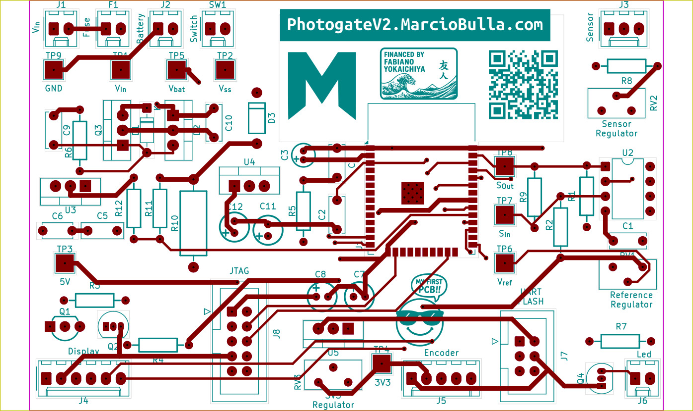
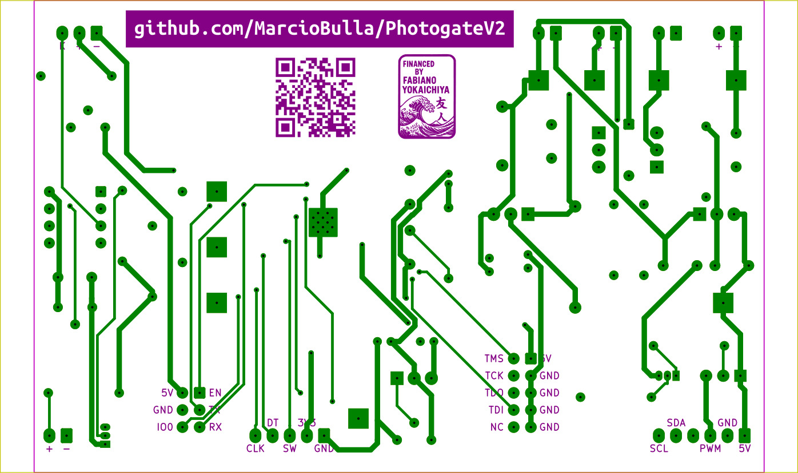
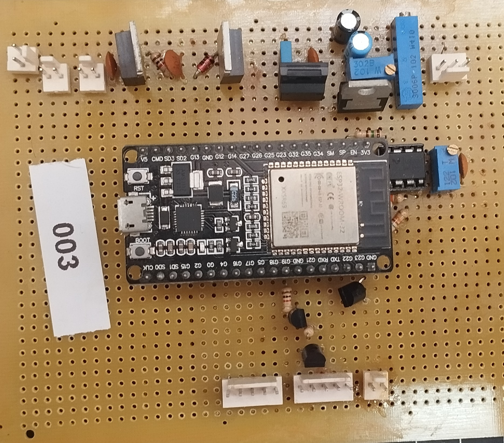
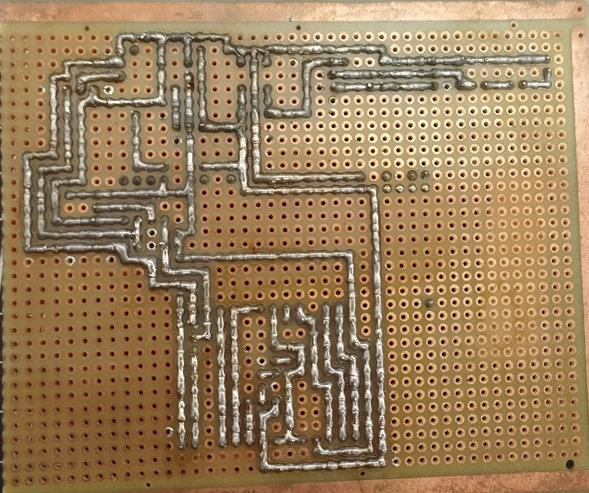

Hardware Development
The electronic hardware was designed in KiCad around an ESP32-WROOM module. The board integrates power conditioning, the infrared sensor interface, display and encoder connectors, LED signaling, battery support, and programming/debug interfaces.
KiCad Project
Design Files
boards/board.kicad_proopens the KiCad project.boards/board.kicad_schstores the complete schematic.boards/board.kicad_pcbstores the PCB layout.boards/packages3D/contains the component 3D packages.boards/jlcpcb/contains production files for fabrication.
Functional Blocks
- 9V to 12V power input with protection and regulation.
- Optional 2S battery/BMS support.
- Infrared sensor connector and current adjustment.
- LM393 comparator with adjustable threshold and hysteresis.
- LCD display, encoder, LED signal, ESP32, UART, and JTAG interfaces.
Electronics Architecture
flowchart LR
Battery[(BMS 2S Battery Supply)]
Power[[Power Supply]]
Source[/Supply Source Connector/]
Prog[/ESP32 Interfaces/]
J5V((5V))
J3V3((3V3))
JPulse((3V3 Pulse))
ConnSensor[/Sensor Connector/]
Sensor{{IR Sensor to Digital}}
Brightness{{Brightness LCD Control}}
ConnDisplay[/Display Module PCF8574 Connector/]
ConnEncoder[/Encoder KY-040 Connector/]
ConnLed[/LED Connector/]
ESP32([ESP32-WROOM])
Battery ==>|8.4V to 7V| Power
Power ==>|approx. 100 mA| Battery
Source ==>|9V to 12V| Power
Prog <==>|UART and JTAG| ESP32
Power === J5V
Prog ==> J5V
J5V ==> ConnSensor
J5V === J3V3
J3V3 ==> Sensor
ConnSensor ==>|Signal| Sensor
Sensor ==> JPulse
JPulse ==> ESP32
JPulse ==> ConnLed
J3V3 ==> ConnLed
ConnLed ~~~ ESP32
ConnEncoder ==> ESP32
J3V3 ==> ConnEncoder
J3V3 ==> ESP32
J5V ==> Brightness
ESP32 ==>|I2C| ConnDisplay
ESP32 ==>|3V3 PWM| Brightness
Brightness ==>|5V PWM| ConnDisplay
J5V ==> ConnDisplay
classDef power fill:#d9f2d9,stroke:#2e7d32,stroke-width:2px,color:#111111;
classDef control fill:#dbeafe,stroke:#1565c0,stroke-width:2px,color:#111111;
classDef sensor fill:#fff3cd,stroke:#b8860b,stroke-width:2px,color:#111111;
classDef conn fill:#efe0ff,stroke:#7b1fa2,stroke-width:2px,color:#111111;
classDef prog fill:#eeeeee,stroke:#616161,stroke-width:2px,color:#111111;
classDef junction fill:#ffffff,stroke:#444444,stroke-width:2px,color:#111111;
class Power,Battery power;
class ESP32 control;
class Sensor,Brightness sensor;
class Source,ConnDisplay,ConnEncoder,ConnLed,ConnSensor conn;
class Prog prog;
class J3V3,J5V,JPulse junction;
Complete Schematic
The complete schematic shows how the ESP32, power rails, sensor conditioning, user interface, and programming interfaces are connected in the same KiCad project.

Interactive BOM
PCB Layout
The PCB layout prioritizes through-hole components, clear labels, polarized connectors, test points, and a compact two-layer board. These images document the board design before fabrication.


Prototype Board
The prototype photos document the assembled hardware used during development and testing.

